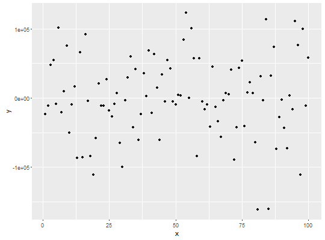

stat_fit_residuals(mapping = NULL, data = NULL, geom = "point", method = "lm", formula = NULL, resid.type = NULL, position = "identity", na.rm = FALSE, show.legend = FALSE, inherit.aes = TRUE, ...)
aes or aes_string. Only needs
to be set at the layer level if you are overriding the plot defaults.residuals() as argument for
type.NA, the default, includes if any aesthetics are mapped. FALSE
never includes, and TRUE always includes.FALSE, overrides the default aesthetics, rather
than combining with them. This is most useful for helper functions that
define both data and aesthetics and should not inherit behaviour from the
default plot specification, e.g. borders.layer. This
can include aesthetics whose values you want to set, not map. See
layer for more details.stat_fit_residuals fits a linear model and returns
residuals ready to be plotted as points.
This stat can be used to automatically plot residuals as points
in a plot. At the moment it supports only linear
models fitted with function lm(). This stat only generates the
residuals.
Data frame with same nrow as data
as subset for each group containing five numeric variables.
library(ggplot2) # generate artificial data set.seed(4321) x <- 1:100 y <- (x + x^2 + x^3) + rnorm(length(x), mean = 0, sd = mean(x^3) / 4) my.data <- data.frame(x, y, group = c("A", "B"), y2 = y * c(0.5,2)) # give a name to a formula my.formula <- y ~ poly(x, 3, raw = TRUE) # plot ggplot(my.data, aes(x, y)) + stat_fit_residuals(formula = my.formula, resid.type = "working")